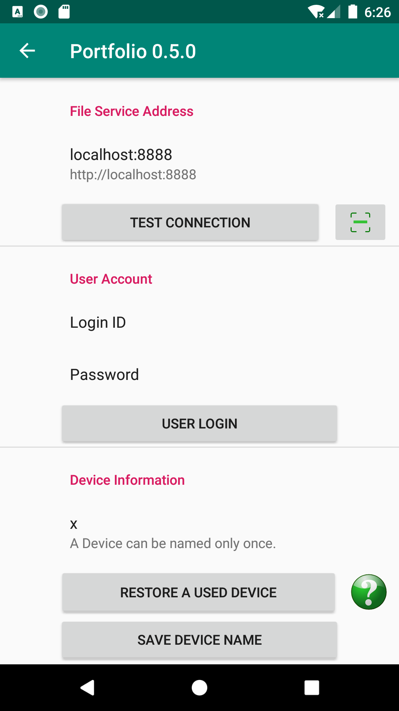
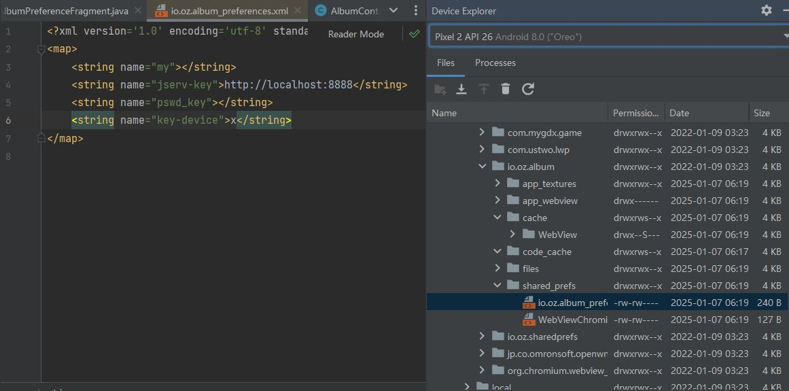

1. Issues
1.1. Injecting jservs at runtime
When the application server is installed, it should know peer jservs through dictionary.json, wich is version controlled in source.
The test uses a simple cheap way to setup this.
public static SynotierJettyApp main_(String vol_home,
String[] args, PrintstreamProvider ... oe) {
// @Option(name="-peer-jservs",
// usage=only for test, e. g.
// "X:http://127.0.0.1:8964/album-jserv Y:http://127.0.0.1/album-jserv")
// public String CliArgs.jservs;
CliArgs cli = new CliArgs();
CmdLineParser parser = new CmdLineParser(cli);
parser.parseArgument(args);
if (!isblank(cli.installkey)) {
YellowPages.load(FilenameUtils.concat(
new File(".").getAbsolutePath(),
webinf,
EnvPath.replaceEnv(vol_home)));
AppSettings.setupdb(cfg, webinf, vol_home, "config.xml", cli.installkey,
// inject jservs args to the peers' configuration
cli.jservs);
}
}
Where the jservs for peers are injected into SynodeConfig, and then updated into table syn_nodes, planning future extension for providing jservs in a separate json.
1.2. Only one syn-worker thread
Multiple synodes cannot work in one (test) running.
commit: 2079991c2cfda1a46ac532b94ebb836e41590377
See ExpSynodetier.syncIns().
1.3. Overhaul: sending exception to client
Re-design ServPort.err(MsgCode code, Exceptiion e);
1.4. How long will the syn-worker can work without clean buffered data
The maximum distance between stamps in syn-change and synode’s stamp is half of Nyquence range, Long.MAX_VALUE, 2 ^ 63 -1 in Java. Each time the stamp will be increased by 1 for a syn-workers looping. The longest buffering is the difference of the earliest buffered change logs and the latest stamp.
If each interval is one second, a year has 3.15 * 10 ^ 7 seconds, the longest time can be correctly buffered is approx. 300 billion years.
1.5. Enable CORS for Jetty 12
Dec 31, 2024
Jetty EE10 deprecated CrossOriginFilter, but Jetty 12 together with EE8 is not likely will be supported in the near future:
It is now possible to add handles after ee10 ServletContextHandler.
However for ee8/9 it might be a bit more fiddly to insert a core handler in the right location
See Jetty.project #10220.
And Semantic.jserv is built upon Servlet 3.1, and can only depends on EE8.
mvn dependency:tree
[INFO] --- dependency:3.6.0:tree (default-cli) @ docsync.jserv ---
[INFO] io.github.odys-z:docsync.jserv:jar:0.2.0
[INFO] +- javax.servlet:javax.servlet-api:jar:3.1.0:compile
[INFO] +- io.github.odys-z:semantic.DA:jar:1.5.8:compile
[INFO] | +- io.github.odys-z:semantics.transact:jar:1.5.53:compile
[INFO] | | \- io.github.odys-z:antson:jar:0.9.104:compile
[INFO] +- io.github.odys-z:anclient.java:jar:0.5.6:compile
[INFO] | \- io.github.odys-z:semantic.jserv:jar:1.5.6:compile
[INFO] +- io.github.odys-z:synodict-jclient:jar:0.0.9:compile
[INFO] +- org.eclipse.jetty:jetty-server:jar:12.0.10:test
[INFO] | +- org.eclipse.jetty:jetty-http:jar:12.0.10:test
[INFO] | | \- org.eclipse.jetty:jetty-util:jar:12.0.10:test
[INFO] | +- org.eclipse.jetty:jetty-io:jar:12.0.10:test
[INFO] +- org.eclipse.jetty.ee8:jetty-ee8-webapp:jar:12.0.11:test
[INFO] | +- org.eclipse.jetty:jetty-ee:jar:12.0.11:test
[INFO] | +- org.eclipse.jetty:jetty-xml:jar:12.0.11:test
[INFO] | \- org.eclipse.jetty.ee8:jetty-ee8-servlet:jar:12.0.11:test
[INFO] | +- org.eclipse.jetty.ee8:jetty-ee8-nested:jar:12.0.11:test
[INFO] | | +- org.eclipse.jetty:jetty-security:jar:12.0.11:test
[INFO] | | +- org.eclipse.jetty:jetty-session:jar:12.0.11:test
[INFO] | | \- org.eclipse.jetty.toolchain:jetty-servlet-api:jar:4.0.6:test
[INFO] | \- org.eclipse.jetty.ee8:jetty-ee8-security:jar:12.0.11:test
[INFO] \- io.github.odys-z:syndoc-lib:jar:0.5.7:test
FIY
The jetty source project has tests of CrosOriginHandler which can be the example. The start() method explains details.
public void start(CrossOriginHandler crossOriginHandler) throws Exception { server = new Server(); connector = new LocalConnector(server); server.addConnector(connector); ContextHandler context = new ContextHandler("/"); server.setHandler(context); context.setHandler(crossOriginHandler); crossOriginHandler.setHandler(new ApplicationHandler()); server.start(); }
See CrossOriginFilter. document.
Using CrossOriginFilter, with source:
private SynotierJettyApp allowCors(ServletContextHandler context) {
CrossOriginFilter.synode(syngleton().synode());
FilterHolder holder = new FilterHolder(CrossOriginFilter.class);
holder.setInitParameter(CrossOriginFilter.ALLOWED_ORIGINS_PARAM, "*");
holder.setInitParameter(CrossOriginFilter.ACCESS_CONTROL_ALLOW_ORIGIN_HEADER, "*");
holder.setInitParameter(CrossOriginFilter.ALLOWED_METHODS_PARAM, "GET,POST,HEAD");
holder.setInitParameter(CrossOriginFilter.ALLOWED_HEADERS_PARAM, "X-Requested-With,Content-Type,Accept,Origin");
holder.setName("cross-origin");
FilterMapping fm = new FilterMapping();
fm.setFilterName("cross-origin");
fm.setPathSpec("*");
context.addFilter(holder, "/*", EnumSet.of(DispatcherType.REQUEST));
return this;
}
TIP
For error:
Status Code: 405 Method Not Allowed
The possible reason is that the incorrect request URL is handled by the default Jetty handler, by which the POST method is not allowed by the server.
References:
1.6. Android PreferenceEdit Saves Violate OOP Encapsulation Principle
CompileSDK 34
TargetSDK 34
Virtual Device: Pixel 2 API 26
Tue 07 Jan 2025
When modified PreferenceEdit, the changes are saved to the xml storage after user’s confirmation. To discard the dirty changes next time, the initial value must be reloaded, which is already lost.
 {kind=link}
{kind=link}
Current solution: use an Anson object to by pass the behavior and only save as needed.
1.7. Different FileSystem Providers of JDK 1.8, Windows & Android
Jan 05, 2025
Semantic.DA 1.5.13
Loading text file for jar requires a zip file system provider. This is implemented differently in JDK 1.8 (Semantic.DA dependency) and Android environment.
At least API 26, the Zip file system provider is not available on Android.
Response from the engineering team:
=================================
The missing implementation is com.sun.nio.zipfs.ZipFileSystemProvider, which
is not available on Android. We recommend using ZipInputStream, which is not
a replacement but can be used to achieve similar functionality.
Current fixing for loading files from jar package:
TODO Add Tests 2025-01-25 (Antson 0.9.113):
1. In deployed server side (Windows), separatlly load zip file within another branch.
2. In Android, avoid loading zip file.
References
Answer by Google AI of search results of “java proper path string format for jdk.zipfs.ZipFileSystem”
import java.io.IOException; import java.io.InputStream; import java.nio.file.*; import java.util.HashMap; import java.util.Map; public class ZipFileExample { public static void main(String[] args) throws IOException { String zipFilePath = "/path/to/your/zipfile.zip"; String entryPath = "path/to/file/inside/zip.txt"; try (FileSystem zipfs = FileSystems.newFileSystem(Paths.get(zipFilePath), null)) { Path pathInZip = zipfs.getPath(entryPath); try (InputStream is = Files.newInputStream(pathInZip)) { // Process the InputStream // ... } } } }
#. Java Documentation, Zip File System Provider, Java SE 8 Documentation, Oracle.
#. by Qusay H. Mahmoud, Compressing and Decompressing Data Using Java APIs, with contributions from Konstantin Kladko, February 2002, SDN Home / Java Technology / Reference / Technical Articles and Tips retrieved on 2025-01-25.
TODO To be edit (replace with loadTxt()):
protected static String loadSqlite(Class<?> clzz, String filename) {
try {
// https://stackoverflow.com/a/46468788/7362888
// URI uri = Paths.get(clzz.getResource(filename).toURI()).toUri();
URI uri = clzz.getResource(filename).toURI();
if (
!eq(uri.getScheme(), "file") &&
zipfs == null)
try {
Map<String, String> env = new HashMap<>();
env.put("create", "true");
zipfs = FileSystems.newFileSystem(uri, env);
}
catch (Exception e) {
Utils.warnT(new Object() {},
"File %s shouldn't be load in the runtime environment.\ntarget URI: %s",
filename, uri);
e.printStackTrace();
return null;
}
uri = Paths.get(uri).toUri();
return Files.readAllLines(
Paths.get(uri), Charset.defaultCharset())
.stream().collect(Collectors.joining("\n"));
} catch (Exception e) {
Utils.warnT(new Object() {},
"File %s can't be loaded in the runtime environment.\n%s",
filename, e.getMessage());
e.printStackTrace();
return null;
}
}
1.8. Shoud forcing Radix-32 for syn-uids
To be verified:
Auto-key will generate Radix 64 number in Linux automatically for syn-uids, which is used as file name prefix and shouldn’t be confused across different platforms.
1.9. File Block Chain vs. DocRef Stream
May 26 2025
File block chain works will in Portolio 0.7.2 (Semantic.jserv 1.5.16, Semantic.DA 1.5.18), but the cons are using a lot of memory at server side, as all blocks are buffered and updated to database, by semantics extfile. Base 64 file content is committed like a database field. the intended function, resume at breakpoint, is not implemented.
In May 2025, a new semantics, the DocRef stream, without database semantics handler, only has Funcalls, is introduced to asynchronously upload file content and synchronize files. SynssionClient and SynssionServ use this schema for synchronize files asynchronously.
The pushBlock() schema is planned to replace stream uploading in the future for breakpoint resumming.
If this object is the reply to client’s Doclientier.pushBlock(), clients can simultaneously upload files in streams mode.
DocRef Stream is used to resolve file reference, while file’s json block chains are used to transfere data. The only possible confliction is extfilev2 triggering by semantics.DA handler and the DocRef is resolving by a Synode. Since Semantic.DA 1.5.18, ShExtFilev2, the handler, will ignore the field is the content is starting with an envelope’s beginning data:
{\s*"type":
The Base64 string cannot has such characters like the curely brace ({), double quotes (”) or colon (:).
TO DO to be verified
Currently there is nyquence tag implemented in DocRef. Resources can be conflict if asynchronously downloading the file, at least will download multiple time in an orthogonal data schema. This is to be optmized if it’s a serious problem in Portfolio.
Reference
[1] Grok Answer: A Java client for uploading files that can resumming at breakpoints,
which is actually the block based style.
try (RandomAccessFile file = new RandomAccessFile(localFilePath.toFile(), "r"); OutputStream outputStream = connection.getOutputStream()) { file.seek(startByte); byte[] buffer = new byte[BUFFER_SIZE]; int bytesRead; while ((bytesRead = file.read(buffer)) != -1) { outputStream.write(buffer, 0, bytesRead); bytesSent += bytesRead; // Save progress Files.writeString(progressFile, String.valueOf(bytesSent), StandardOpenOption.CREATE, StandardOpenOption.WRITE); // Report progress if (progressCallback != null) { progressCallback.onProgress(bytesSent, totalSize); } } outputStream.flush(); }Conclusion (decision?): To optimize memory usage at the server side, no need to find better algorithm other than write a temporary file.